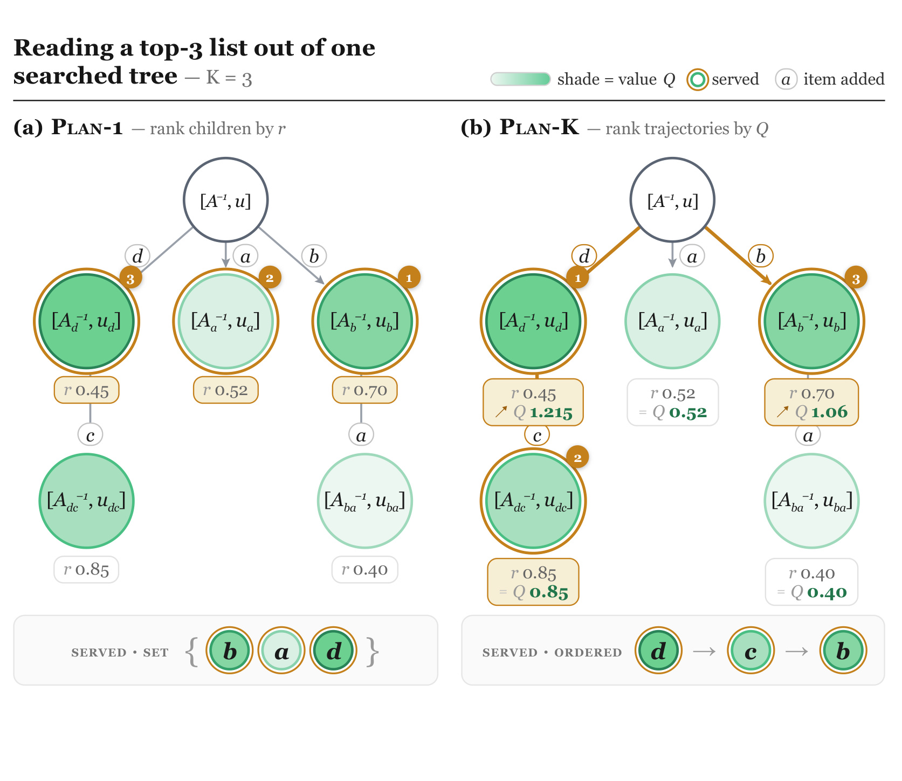
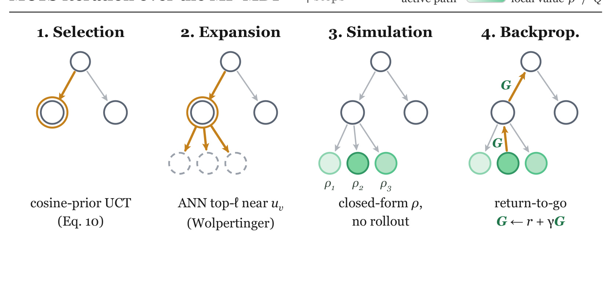
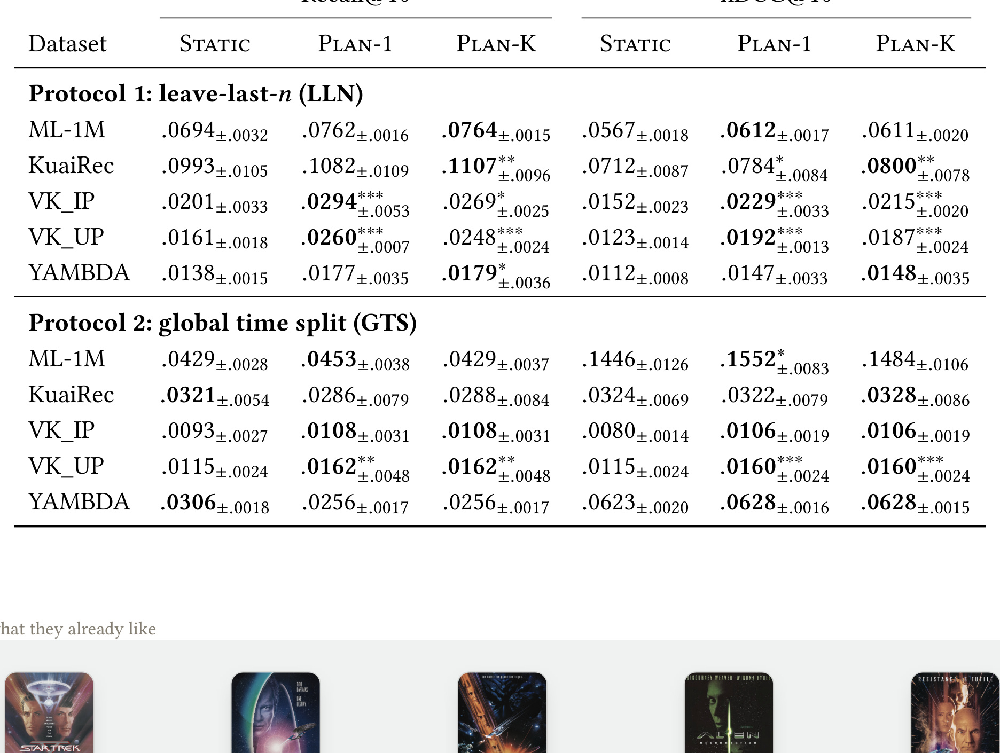
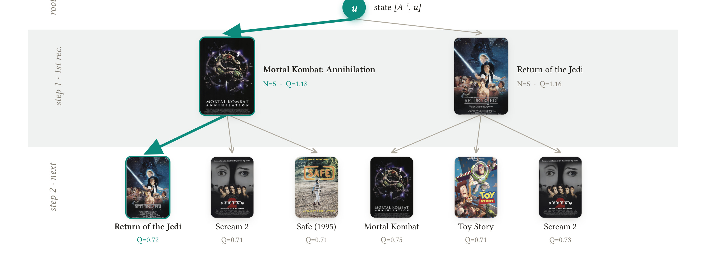
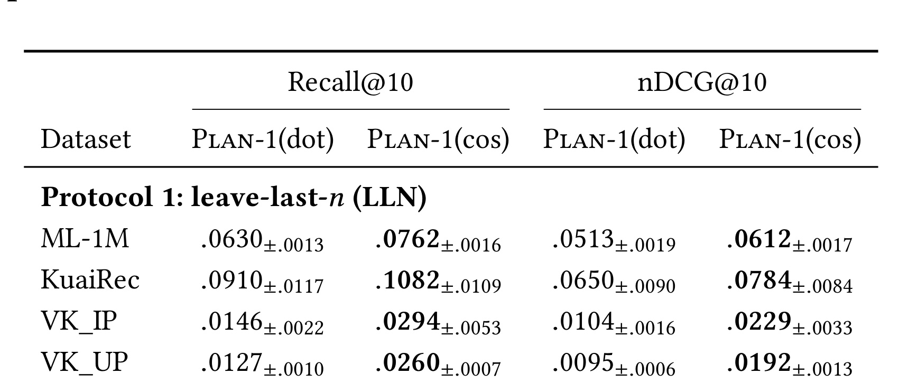

Planning over Matrix-Factorization MDPs for Candidate Generation：把矩阵分解召回改写成短程规划问题
论文：Planning over Matrix-Factorization MDPs for Candidate Generation。作者 Mikhail Trapeznikov 与 Maksim Utushkin 来自 AI VK 和 Lomonosov Moscow State University。论文入口：arXiv:2607.02115。这篇文章的对象不是端到端大模型推荐，而是一个更靠近召回层的老问题：在已经有隐式矩阵分解 embedding 的情况下，top-K 候选是不是只能一次性按静态相似度取前 K 个。作者把这个问题改写成一个很窄但有价值的 MDP：每推荐一个 item，用户隐向量会通过 fold-in 更新，因此下一步应该检索的 item 也会变化。代码页本轮未核验到独立链接。
标准矩阵分解召回把用户压成一个固定向量，再独立返回 top-K item；但一次有用推荐会改变用户状态，后续候选应当基于新的 posterior 继续选择，而不是假设 K 个候选互不影响。
1. 背景和问题
矩阵分解召回的优势是简单、稳定、可部署：训练一组用户和物品向量，线上给定用户向量后做 ANN 或 top-K 打分，就能得到候选集。这个范式在很多工业系统里仍然有现实意义，因为它和倒排、向量索引、缓存、召回多路融合都很好接。但它有一个被日常工程习惯遮住的问题：一次召回返回的不是一个 item，而是一串 item；用户看到、点击、听完或购买第一个 item 后，他的状态已经变化，第二个 item 的价值不应再按原始用户向量独立评估。
这篇论文把这个问题讲得很克制。作者没有声称要替代深度序列推荐，也没有把 MDP 套到全链路排序上，而是问一个更可验证的问题：在固定的 implicit-ALS embeddings 上，是否可以只加一个轻量 planning layer，让静态 top-K 召回变成短程决策。这个设定对工程更友好，因为它不要求重训表示，也不要求重构召回索引；如果规划有效，它可以作为现有 MF 召回或向量召回后的一层候选生成策略。
论文的关键观察是 fold-in 本身已经定义了一个状态转移。隐式 ALS 里，新交互可以用闭式更新把用户 posterior 从当前状态推到下一状态。也就是说，推荐 item 不是只产生一个分数，它还会把用户向量和不确定性结构推进一步。传统 static retrieval 忽略这个转移，只取当前状态下分数最高的 K 个 item；MF-MDP 则把候选序列看成轨迹，允许先选一个能把用户状态推向更好区域的 item，再从新状态继续选第二个和第三个。
这个问题和推荐系统里的“长期价值”有关，但论文没有把目标扩大到长期留存或商业指标。它只在候选生成层面讨论短 horizon planning：给定 K 个推荐槽位，是否应把它们当成一个有顺序的行动序列。这样做的好处是评估可控：使用同一组 item factors、同一批数据集、同一套 leave-last-n 和 global time split 协议，比较 static、one-step planning 和 horizon-K MCTS。它的不足也明确：如果用户状态转移假设不准，或者线上反馈不是 fold-in 能表达的偏好变化，规划层就可能把一个数学上漂亮的 posterior update 误当成真实用户兴趣演化。
更细一点说，传统召回把“返回 K 个候选”当作一次静态排序问题，默认第一个候选和第 K 个候选共享同一个用户状态。这在用户兴趣短期稳定、item 之间相互独立、后续排序层能够完全纠错时问题不大；但在连续消费场景里，候选之间往往有路径依赖。用户刚看完一部动作片、刚听完一首歌、刚点击一个商品详情后，系统对其兴趣的 posterior 应该立即变化。MF-MDP 论文的价值就在于把这个朴素事实落到一个可计算的召回层模型，而不是停留在“长期价值很重要”的口号。它用 implicit-ALS 是一种刻意简化：这个模型足够老、足够透明，fold-in 公式可以直接写成状态转移，因此更容易判断规划本身是否带来收益。
这也解释了为什么论文没有直接追求最强推荐精度。若用深度序列模型或大规模工业特征，规划层、表示层、训练数据和排序策略会混在一起，很难看清哪一部分有效。作者先在固定 MF embedding 上验证“同一表示下，是否值得在候选生成时考虑 action 顺序”，这个问题更窄，但回答更干净。对工程团队而言，这种窄问题反而更适合做 A/B 前的离线筛查：先确认规划层在既有 embedding 上能否改善 coverage 和 nDCG，再决定是否把类似思想扩展到更复杂的召回塔。
从大模型和 RAG 角度看，这篇推荐论文也有迁移价值。很多 RAG 系统会一次性取 top-K chunk，再让模型读；如果第一段证据改变了问题解释，后续证据也应该重新规划。MF-MDP 提供的是一个低维、可控版本的同类思想：候选不是独立集合，而是会改变下一步检索状态的行动序列。
2. 方法
2.1 把 implicit-ALS posterior 作为 MDP 状态
方法的核心机制是把 implicit-ALS 的 fold-in posterior 直接提升为 MDP state，让每个 item action 同时产生相关性分数和下一步检索状态。
论文的状态不是普通的用户 embedding，而是 implicit-ALS posterior：可以写成 $(A^{-1}, u)$。其中 $u$ 是当前用户向量，$A^{-1}$ 表示 fold-in 更新中保留的不确定性或二阶结构。action 是选择一个 item $a$，item embedding 记为 $v_a$。当用户接受或消费该 item 后，系统用闭式 rank-one fold-in 把状态推进到下一步。笔记里可抽象成：
符号解释：$s_t$ 是第 $t$ 个推荐槽位前的用户 posterior，$a_t$ 是当前推荐的 item，$A_t^{-1}$ 与 $u_t$ 来自 implicit-ALS 的 fold-in 状态。这个式子不是新增神经网络模块，而是把已有 MF 更新机制显式变成 MDP transition。它的直觉是：如果 item $a_t$ 能改变用户状态，那么第 $t+1$ 步的候选分布应围绕 $s_{t+1}$ 重新计算。
奖励函数由两部分组成：当前 item 和用户状态的 relevance，以及这个 action 对 posterior alignment 的贡献。简化写法为：
符号解释：$\operatorname{sim}(u_t,v_{a_t})$ 是当前状态下 item 的相关性；论文比较了 inner product 和 cosine 两种实例；$\Delta$ 表示 action 对 posterior 的对齐或状态改善项；$\lambda$ 控制这个项和即时相关性的权衡。重要的是，reward 不只看“这个 item 现在像不像用户”，也看它是否让下一步状态更有利。
2.2 Plan-1 与 Plan-K 的两种读出

Figure 1 展示了整篇论文最核心的差异。左侧 Plan-1 从同一棵搜索树的 root children 读出结果：它看第一层每个候选的即时分数，把它们作为互相独立的 top-K item 返回。右侧 Plan-K 则读出完整 trajectory：它关心 $a \rightarrow c \rightarrow b$ 这样的序列在折扣回报下是否更好，而不是每个 item 在 root 状态下的静态分数。这个图说明 MF-MDP 的本质不是换一个相似度函数，而是改变“候选列表”的定义。候选列表不再是从同一个用户向量一次性取出的集合，而是一条状态不断更新的短轨迹。对于召回系统来说，这对应一种更接近 slate planning 的候选生成：第一个 item 既要相关，也要为后续 item 打开更好的状态空间。
Plan-1 是轻量版本。它只做一步 lookahead，按 root 的第一层行动排序。论文结果显示，一步规划已经能捕获大部分收益，这对线上可用性很关键。Plan-K 则用更深的 MCTS 近似 horizon-K planning，理论上能利用 item 顺序和后续状态变化，但成本更高，也更依赖转移模型准确性。作者没有把 Plan-K 包装成必然更优，反而在结果里承认它在某些 global time split 上不如 Plan-1 稳定，这个保守结论让论文更可信。
2.3 MCTS 如何在 MF-MDP 上运行

Figure 2 把一次 MCTS 迭代拆成四步：selection、expansion、simulation 和 backpropagation。selection 使用带 cosine prior 的 UCT，从已有树里选择更有希望的节点；expansion 用 ANN 找当前 posterior 附近的候选 item；simulation 不做昂贵 rollout，而是用闭式 value 近似叶子；backpropagation 把折扣 return-to-go 回传给父节点。它的工程含义很明确：规划层不能在大目录里暴力枚举所有 item，必须继续依赖向量召回/ANN，只是在树搜索每个状态处重新询问“当前 posterior 下哪些 item 值得展开”。
论文中可用下面的折扣回传描述 MCTS 的轨迹价值：
符号解释：$G_t$ 是从第 $t$ 步开始的折扣回报，$r(s_t,a_t)$ 是当前 action 的即时 reward，$\gamma$ 控制后续推荐槽位的重要性。这个式子体现 Plan-K 与 static top-K 的根本区别：static 只比较每个 item 的单步分数，Plan-K 比较一条 item 序列的累计价值。
selection 可以概括为：
符号解释：$Q(s,a)$ 是树中估计的 action value；$P_{\cos}(a\mid s)$ 是由 cosine relevance 给出的先验；$N(s)$ 和 $N(s,a)$ 是访问计数；$c$ 是探索系数。这里选择 cosine prior 是经验结果驱动的，不是装饰性修改。论文后面 Table 2 显示 inner product 会把 popularity 和相关性纠缠在一起，导致 planner 更容易追热门 item，而 cosine 更能保留“状态变化后重新检索”的意义。
3. 实验结果
3.1 主结果：短程规划能改善固定 MF embedding 上的召回
实验覆盖五个数据集：MovieLens-1M、KuaiRec、VK_IP、VK_UP 和 YAMBDA。作者使用同一套 item factors，不为 planner 重新训练表示。协议有两种：leave-last-n 把每个用户最后若干交互留作测试；global time split 更严格，按全局时间切分训练、验证和测试，因此更接近部署时用户活跃度、item popularity 和目录组成都会漂移的情况。指标是 Recall@10 和 nDCG@10，报告三次 seed 的均值与标准差，并用 paired Wilcoxon test 标显著性。

Table 1 是论文的主结果。leave-last-n 协议下，Plan-1 在五个数据集的 Recall@10 上都高于 Static，例如 MovieLens-1M 从 0.0603 到 0.0762，KuaiRec 从 0.0993 到 0.1082，VK_IP 从 0.0201 到 0.0294。Plan-K 在 MovieLens-1M、KuaiRec 和 YAMBDA 上给出最高 recall，其中 KuaiRec 达到 0.1107，YAMBDA 达到 0.0179。nDCG@10 上，Plan-1 或 Plan-K 也通常优于 Static，说明提升不只是把相关 item 放进候选集，还能改善前列位置质量。
global time split 的结果更有意思。它比 leave-last-n 更难，因为训练窗口和测试窗口之间存在真实时间漂移。Plan-1 仍在 MovieLens-1M 与 VK-LSVD 两个切片上保持显著收益；但在 KuaiRec 和 YAMBDA 上，Static 反而更强或相当。作者的解释是，当 item popularity 与目录组成强烈漂移时，fold-in 状态对未来的描述能力变弱，规划层可能把过时的转移假设放大。这个负面结果很重要：它提醒我们不要把 planning layer 当成无条件增益。只有当状态转移能稳定刻画用户兴趣演化时，规划才比静态召回有优势。
3.2 案例图说明规划在选第一步时已经改变轨迹

Figure 3 展示一个 MovieLens 用户的规划轨迹。顶行是用户历史里喜欢的电影，root 是当前 posterior。第一层展开两个候选：Mortal Kombat: Annihilation 和 Return of the Jedi。图里高亮路径说明 planner 不是只看每个候选本身的静态相似度，而是看选择某个 item 后，第二层还能接出哪些 continuation。被选中的第一步可能不是单点分最高的 item，但它连接到更好的后续序列。
这个案例有助于理解 MF-MDP 和普通 reranking 的差异。普通 reranker 可以在已有候选上调整顺序，但通常不改变候选生成过程；这里的规划层在每个中间状态重新展开候选，因此第二步候选本身可能因第一步 action 而变化。对推荐系统工程而言，这更像一种“召回时的轻量用户状态模拟”：先假设用户接受某个候选，再看下一步召回空间会不会更好。它的潜在价值在多槽推荐、连续播放、音乐列表、短视频 feed 和学习路径推荐里都比较自然，因为这些场景的 item 之间确实有顺序和状态依赖。
3.3 消融：cosine relevance 是规划有效性的关键条件

Table 2 单独比较 Plan-1 使用 inner product 和 cosine 的差异。结果显示，在 leave-last-n 协议下，cosine 在五个数据集的 Recall@10 和 nDCG@10 上都优于 dot，例如 KuaiRec Recall@10 从 0.0910 到 0.1082，VK_UP 从 0.0146 到 0.0294。global time split 下，cosine 也在 MovieLens-1M 和 VK 两个切片上更好。这说明 planner 的收益不是来自任意相似度加树搜索，而依赖一个不被 item norm/popularity 过度污染的 relevance 口径。
这个消融对实际落地很有价值。很多 MF 或 two-tower 召回系统用 inner product，是因为它和 ANN 实现、训练目标、热门 item 曝光都有历史惯性。但如果把 retrieval 变成规划问题，inner product 的 popularity bias 会被轨迹展开反复放大：第一步选热门 item，fold-in 后状态继续向热门区域偏移，后续候选也更可能被 norm 主导。cosine 把向量长度影响去掉，更适合表达“当前状态方向是否与 item 方向一致”。这也是作者在方法里把 cosine prior 用进 UCT 的原因。
3.4 证据边界
这篇论文的实验可信度来自两个控制：同一组 embeddings 和两个时间协议。同一组 embeddings 避免了“planner 模型更强”这种混淆；global time split 则暴露了规划假设在真实时间漂移下的弱点。它的限制同样清楚。第一，所有结果仍是离线数据集，用户是否真的会因第一步推荐而按 fold-in 方式改变状态，线上还未验证。第二，Plan-K 的深层规划并不稳定胜过 Plan-1，说明长 horizon 搜索的收益和成本要谨慎权衡。第三，固定 embedding 的前提既是优点也是边界：如果底层表示本身无法表达短期意图，规划层无法凭空创造语义信息。
对推荐链路来说，最合理的使用方式不是把 MF-MDP 当作主排序模型，而是作为候选生成或多槽召回的一个实验分支。可以先在固定 embedding 上做 one-step planning，对比静态召回的 coverage、diversity、session continuation 和线上短期留存；若收益集中在某些场景，比如音乐列表、连续观看或学习路径，再考虑更深的 MCTS。若场景强依赖实时热点或 item supply 快速变化，则应优先使用更严格的时间切分离线评估，避免规划层在旧 posterior 上过拟合。
4. 总结
MF-MDP 的价值在于，它把一个常被视为静态向量检索的问题，重新表述为短程状态规划。这个改写不需要新的大模型，也不需要重训 embedding，而是利用 implicit-ALS fold-in 已经存在的闭式更新，把每个推荐 item 看成会改变用户 posterior 的 action。实验表明，在 leave-last-n 和部分 global time split 场景中，one-step planning 已经能稳定改善 Recall@10 和 nDCG@10；更深的 Plan-K 有时更好，但并不无条件占优。
我认为这篇论文最适合作为“召回层规划化”的技术线索。它提醒推荐系统不要只把 top-K 当成集合，也不要把多槽推荐完全交给后置 reranker；如果第一步候选会改变用户状态，那么候选生成本身就应该考虑顺序。这个思想对 LLM/RAG 也有启发：一次性取 top-K 证据和一次性取 top-K item 有相同问题，第一段证据或第一个 item 都可能改变后续检索目标。
局限至少有四点。第一，fold-in 转移是假设用户接受 item 后的状态更新，未必等价于真实线上行为。第二，Plan-K 成本更高，且在严格时间切分下不总是优于 Plan-1。第三，实验没有覆盖深度召回模型、序列推荐 backbone 或大规模线上 ANN 约束。第四，cosine 优于 dot 的结论虽然清楚，但如果现有系统训练目标和索引都围绕 inner product 构建，切换 relevance 口径会影响召回分布、缓存和业务策略。
后续值得跟进三件事：一是把 one-step MF-MDP 接到现有召回实验中，观察多槽推荐的覆盖、重复率和 session continuation；二是在更真实的时间切分和 supply 漂移下评估规划是否稳定，尤其关注热门 item 和冷门长尾的分布变化；三是把这种 MDP 视角扩展到 neural two-tower 或 LLM4Rec 的候选生成，让“候选会改变状态”成为召回层的显式建模对象，而不是只在排序阶段被动处理。